Mermaids may not exist, but the ocean is still full of mysteries.Those large, beautiful bodies of water are home to an infinite number of strange creatures and bewildering phenomena. The average ocean depth is 14,000 feet deep — that leaves a lot of room for the mysterious, the mythical and everything in between.
The four submarine disappearances of 1968
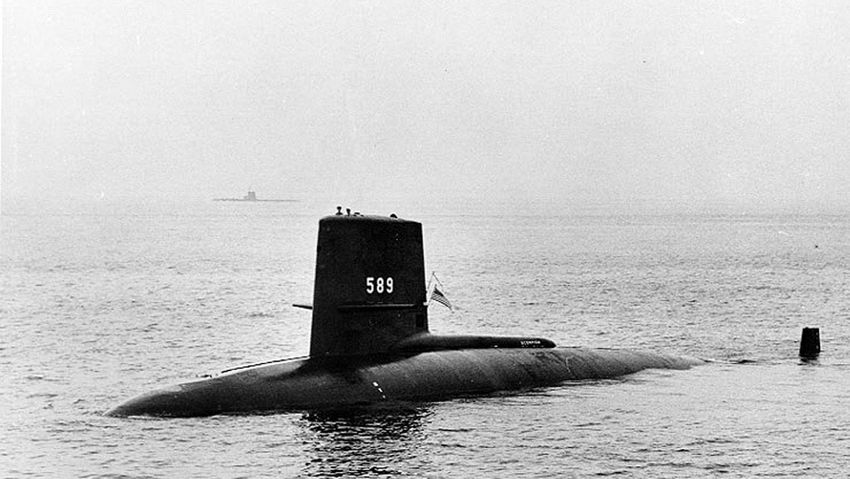
It was a bad year for submersibles. In 1968, four separate submarines from different countries completely disappeared. There was the USS Scorpion (U.S.), the INS Darak (Israel), the Minerve (France) and the K-129 (Soviet Union).Theories around the unrelated disappearances vary, from accidental torpedo self-firing to attacks kept under wraps by the government (particularly between the Scorpion and K-129). All four missing subs still have no explanation, and considering how deep the potential remains could have sunk, an explanation might never arrive.
A cannibal shark in Australia
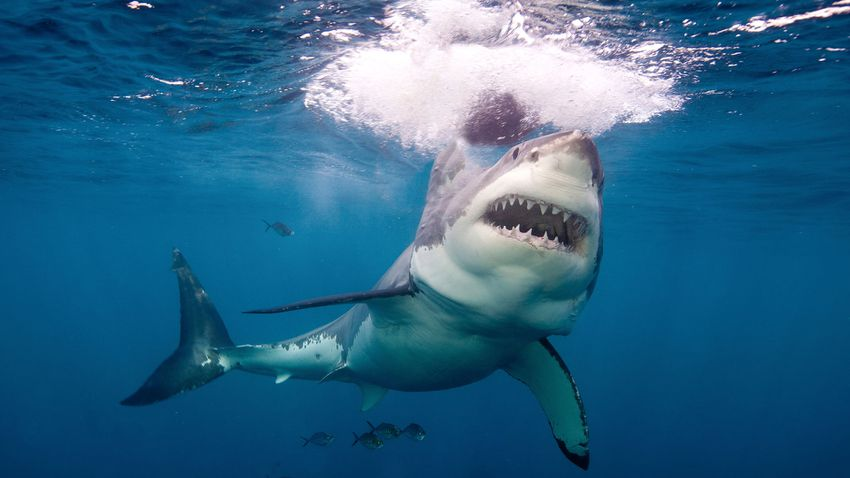
Possibly the only thing scarier than a shark is a cannibal shark. After scientists recovered a tag that had been tracking a nine-foot long great white, they discovered something surprising. The shark had suddenly dove 1,903 feet, the temperature on the tag going from 46 degrees Fahrenheit to 78 degrees Fahrenheit. The only way the temperature could change that swiftly is if the shark had been eaten by something larger.It's not entirely uncommon for a shark to eat another shark, though the instances surrounding this great white are still murky. Researchers involved have also tossed around theories of a tussle with a killer whale, but others say it is likely a "two-ton colossal cannibal great white shark."Congratulations, sharks – you're more terrifying than we thought.
The ghost ship Kaz II
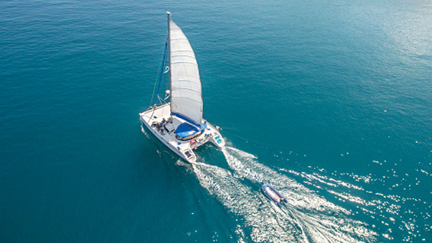
The Kaz II was a boat that set sail in 2007 from Australia. It was manned by three sailors and was mysteriously found drifting with the motor still running, a powered-on laptop, and a table completely set with no sign of any foul play... oh, EXCEPT FOR THE MISSING CREW! Coroners have speculated what happened to the men but nothing has ever been proven.
Mariana Trench
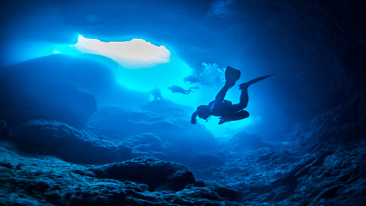
The Mariana Trench is the deepest point in all of our oceans, coming in at 36,201 feet deep. That's right, you could stick Mt. Everest on the bottom and it would be COMPLETELY covered by water with an extra 7,000 feet of extra water on top. Because of the sheer size and pressure, only four expeditions have successfully descended. Who knows what's even down there? There's just too much of it!!
Baltic Sea anomaly
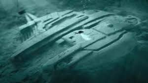
No,that's not the Millenium Falcon. It was discovered by two researchers using a sonar scan in 2011 some 300 feet deep on the ocean floor of the Baltic Sea. The strange shape led many to believe it was some kind of space craft that had crash landed or a weird natural formation. Even crazier, some now speculate it could be some kind of secret war technology.
Unexplained sounds
You know that feeling when you hear a strange noise in the middle of the night? Imagine that, but in the middle of the effing ocean. There are several unexplained noises that have been recorded over the years with two of the most popular being "The Bloop" and "Julia." These sounds have to have been made by very large objects (or possibly creatures), with most scientists believing the sounds are large icebergs scraping the ocean floor. BUT WHAT IF IT'S NOT???
The real Atlantis
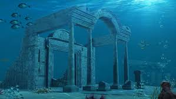
Like Sebastian said, "The human world is a mess." So why not try life under the sea? Some say that the lost underwater city of Atlantis has been discovered right off of the island of Delos in Greece. An entire planned town was found with several buildings, courtyards, and so many pieces of pottery
The HMS Daedalus' Sea Serpent
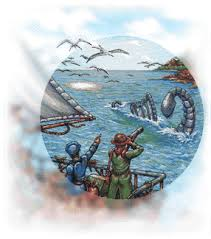
For over twenty minutes, the crew of the HMS Daedalus, a Royal Navy warship, watched what they claim to be a giant, 100-foot-long snake with a dragon's head swim near their boat. Don't trust the Daedalus crew? It was spotted a second time by the American brig Daphne, who even shot at the creature and tried to follow it, only to lose it at sea. Scientists today think they most likely saw a whale, but wouldn't a bunch of experienced sailors know the difference between a whale and a serpent?
The Bermuda Triangle
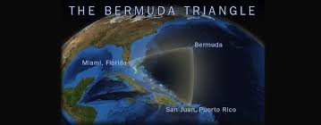
Named for the triangular shape of around 500,000 square miles of ocean between Miami, Bermuda, and Puerto Rico, the Bermuda Triangle is one of the most notorious sea legends. When Christopher Colombus first sailed the area he claimed to see a giant ball of light in the sky that crashed into the horizon and made it glow. Soon, all sorts of strange events began being claimed in the area, including several boats disappearing with no one radioing in a distress signal, and in one incident in 1945, an entire squadron of US torpedo bombers vanished into thin air.
The Gulf of Mexico's cursed shipwreck
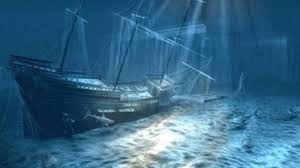
Exxon Mobil was laying pipeline when they happened to stumble upon this shipwreck. That would be the last bit of good luck to happen near this site. A team was assembled to explore the wreckage but nothing ever seemed to go right. The exploration sub malfunctioned right as it was getting ready to go check out the wreck; everything from video monitors going out whenever they fired the thrusters, to sonar breaking, to hydraulics going haywire one after another. Next, the Navy sent a researcher sub that basically self destructed its own rover upon entering the water, and when it finally got to the wreck, its arms were too short to reach anything. These are only some of the many attempts and spectacular failures that this cursed ship seems to bestow on all ye who enter there.
The Stronsay Beast
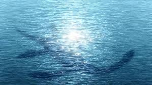
Scotland seems to have the sea beasts on "loch." Not only do they have the now infamous tales of The Loch Ness Monster, but, back in 1808, a strange carcass washed up on the shores of Stronsay that many believe be another Plesiosaurus. Scientists speculate that it was a 36-foot-long decaying basking shark, but do basking sharks have paw-like fins with articulating joints, like the eyewitnesses reported seeing on the creature?
The Phantom Island of Bermeja
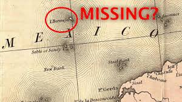
An island called Bermeja was found on several maps and charts throughout the 16th century to the present, however, when recent surveyors went out to explore the area in 2009, the island had mysteriously vanished. This occurrence is called "Phantom Islands" and has happened with many different marked map locations over the years. Did the islands never exist? Did the US government blow the island up to expand the US hold on the oil-rich Gulf like some conspiracy theorists believe? Is this Wonder Woman's home island, Themyscira? We may never know.
Devil’s Sea
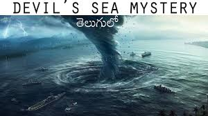
Want to never go out on a boat again? Look no further than than the Devil's Sea. It is one of the twelve vile vortices (or vortexes) of the world right up there with the Bermuda Triangle. It's a place where planes drop from the sky like birds and large methane deposits cause gas explosions. It's also where the US lost over 20 submarines during WWII and ships that are twice as big as the Titanic go missing.
Yonaguni Monument
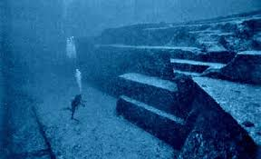
These giant stair-like structures were discovered in 1985 and have been causing controversy ever since. Many believe them to be man-made from some ancient civilization, but some believe them to just be rare natural formations. These stone giants are over 165-feet-long and 65-feet-wide. All I know is I definitely don't want to meet the thing that is large enough to use those steps.
The Kraken
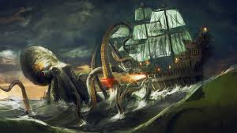
Everyone picture a school bus. Now imagine a squid that size. It's not a great picture, huh? Well back in 1870, a giant squid washed up in New Zealand. The villagers of the area reported it was the same animal that had grabbed and sunk a canoe previously. The squid's mantle, that cone shaped thing at the top of its head, was more than 9 feet long. A scientist today has concluded that this means that giant squids could reach lengths between 19 to 90 feet long. He says that top number may be a little high, but that he can conservatively say 66-feet-long squids are not out of the question.
Milky Sea Phenomenon
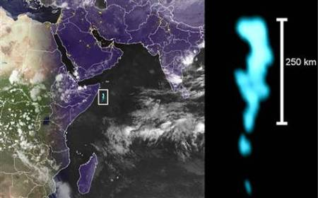
Milky Sea refers to the unique milky glow of the waters of the Indian Ocean. The ocean phenomenon occurs on account of bioluminescent bacterial action and in turn, causes the water to turn blue, which appears to the naked eye as being milky white in colour in the darkness. The Milky Sea phenomenon has been documented to be in existence for over four centuries.
Convergence of Baltic and North Seas
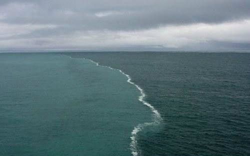
This oceanic phenomenon has been a highly debated topic. The convergent point of the North and the Baltic Seas occurs in the province of Skagen in Denmark. However, because of the differing rates of densities of the seas’ waters, the sea waters continue to remain separate in spite of their convergence. It is said that this ocean phenomenon finds a mention in the holy Koran.
Steaming Black Sea
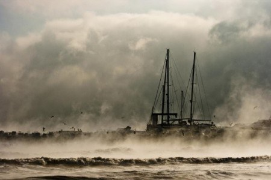
Called as the ‘sea smoke’, the steam arising out of the Black Sea is caused due to the humidity of the oceanic water counteracting with the coolness of the wind over the water’s surface. Apart from explaining the ocean mystery behind the steam rising from the Black Sea, experts have also proved that the phenomenon is quite common to even smaller water bodies.
Brinicle
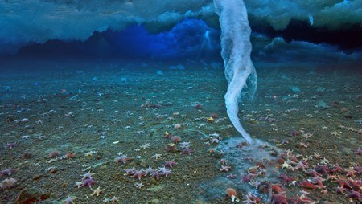
Concentrated salt water escapes from within the frozen ice formed above the ocean’s surface and seeps into the depths of the water. However, once the concentrated salt goes under the surface of the water, on account of natural processes it freezes and gets formed into brinicles. Brinicles occur in the frigid oceanic waters around the poles.
Red Tide
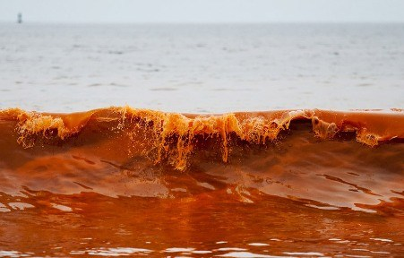
The occurrence of red tide is technically called as ‘Algal Blooming’ by scientists. The ocean phenomenon occurs when there is rapid growth or blooming of algae in the oceanic waters. The presence of red tide is highly dangerous as these algae can be fatal to birds, animals and even humans.
Underwater Crop Circle
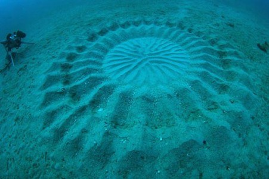
Once regarded to be objects of high intrigue, the underwater crop circles have been explained to be a creative demonstration of pufferfishes’ quests for finding their mates. These underwater circles have circumferences of over six feet and are often decorated with shells and other decorative items found at the bottom of the sea. The underwater crop circles were discovered under the waters of the Japanese island of Anami Oshima. Some consider these ocean mysteries as the work of aliens.
“Immortal” jellyfish
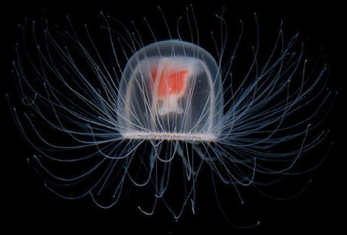
The “Benjamin Button” jellyfish has an incredibly unique feature. While they normally reproduce and die in a manner you would expect, if they see serious trauma, they can reverse the aging process and start transforming themselves to a younger state of existence. This allows them to heal from injuries and survive great stress as a species and is currently making them a great threat to the world’s oceans. They are starting to crowd out parts of the oceans, making it difficult for other marine life to propagate and provide proper balance.
Giant oarfish
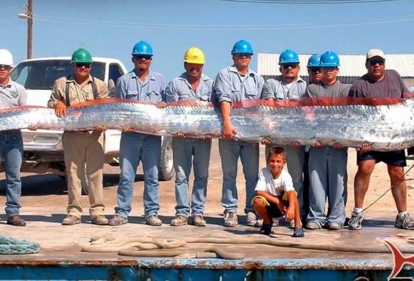
Could these be the sea monsters of yore? This snake-like creature is the longest bony fish on Earth, and can grow up to 56 feet and weigh 600 pounds. But because they live at depths around 3,300 feet, not much is known about the rarely-seen-alive creature. Two dead oarfish were found on California shores in 2013, prompting scientists to wonder if ominous forces were at work to beach the normally deep-sea animals, as they have been rumored to wash up before earthquakes. But instead the incident turned out to be a boon for scientists to be able to study the specimens—since they don't even know how many species of the fish exist, DNA samples could help researchers figure that out.
Purple orb
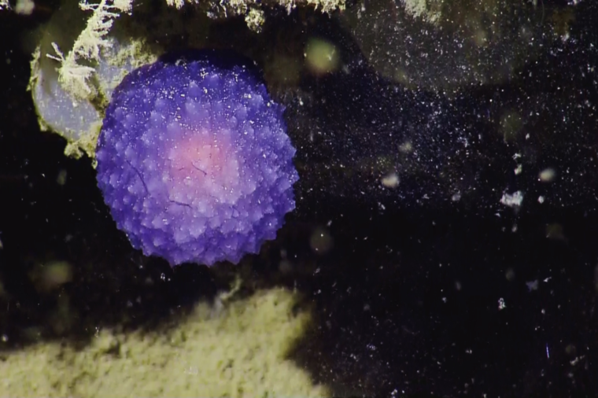
In 2016, researchers from Ocean Exploration Trust (founded by oceanographer and Titanic discoverer Robert Ballard) aboard the Exploration Vessel Nautilus found a strange purple blob on the ocean floor off California. Stumped as to what it could be, the scientists joked about it being a spider egg sac or a "tiny momma octopus," and nicknamed it Blobus purpilis before battling with a crab to retrieve the specimen. It looks kind of like a strange and mesmerizing jellyfish. Research is ongoing as to what the orb is, but it's hypothesized to be a new species of velutinids, a type of snails. Here are more of the most stunningly beautiful underwater photos ever taken.
Undersea geology
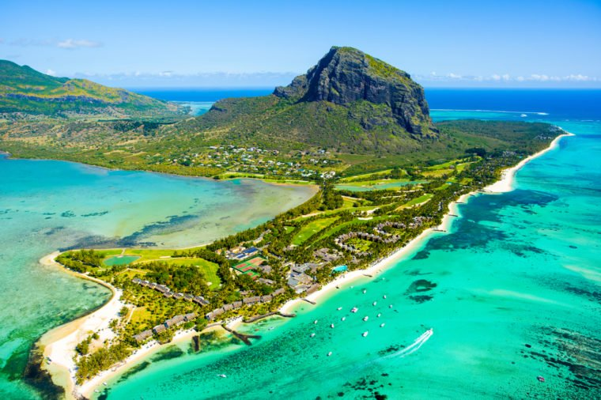
We might not know much about the terrain of the ocean, but we have seen is just as stunning as what's on land—and in fact, may be strikingly similar. "Brine pools," where the salt water concentration is greater than the surrounding ocean, create lake-like surfaces and shorelines. Earth's largest waterfall is actually underwater in the Denmark Strait, where colder water tumbles over a huge drop in the ocean floor, falling 11,500 feet (the largest land waterfall is only 3,212 feet). Underwater volcanoes erupt—the largest one ever recently happened, and scientists almost missed it. Although researchers know all of these things exist, their exact mechanisms are still being investigated, making them one of the perplexing science mysteries no one has figured out.
The Abyss
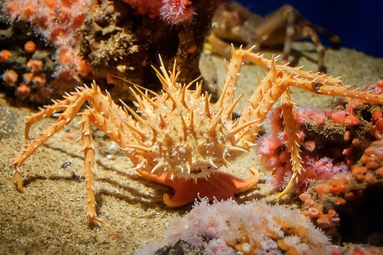
We're not talking about James Cameron's 1989 movie about researchers who find a deep-sea civilization—but scientists are traveling to the real-life abyss, the area between 13,000 and 20,000 feet under the surface, to discover new marine life. A recent expedition near Australia located hundreds of new species, as well as little-known creatures like the "faceless fish" that hasn't been seen here since 1873. Other rare specimens the scientists collected include the spiny king crab, the monkey brittle star, the smooth-head Blobfish (yes, that's its real name), and the deep-sea lizard fish. Who knows what else is down there? We sure don't—and we don't know the explanations for these unsolved mysteries about planet Earth, either.
The ocean floor
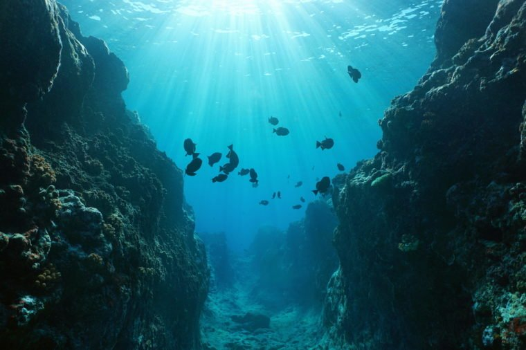
Seventy percent of the Earth's surface is below the ocean, yet 95 percent of it remains unexplored to the human eye. Although the oft-heard statistic is that we know more about the surface of Mars than we do about the ocean seabed, scientists have been able to map the entire ocean floor—but the resolution is incredibly poor, so we can only visualize features larger than three miles. Ongoing research like Seabed 2030 aims to bring the ocean floor into greater focus, so we can better see and understand what's really down there. For now, we can just marvel at the most stunning deep-sea sights in the world.
Greenland coral reefs
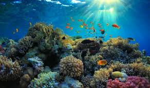
In 2012, researchers stumbled across a deep coral reef while taking water samples 900m down off Cape Desolation on Greenland’s southern coast. The crew first realised there was a reef beneath them when they lowered their equipment into the depths and it was smashed by the coral. Initially angered by the destruction of their equipment, the team soon became excited when they realised what lay beneath them.Virtually nothing is known about the Greenland reef, however similar cold-water reefs in Norway are 8,000 years old. Unlike coral found in tropical waters, cold-water reefs are capable of thriving in water with a temperature as low as 4 degrees Celsius and in total darkness. This is because, unlike their tropical relatives, cold-water corals do not rely on sunlight for energy, instead feeding on zooplankton that is brought to the reef by ocean currents. Due to the depth at which they are found, much mystery still surrounds cold-water reefs and the animals that inhabit them.
Silfra fissure
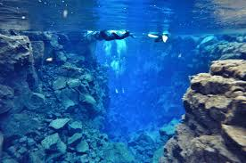
Located in the middle of Iceland, this is the only place where you can swim in the crack between two continents. It is here that the Eurasian and North American plates meet, creating a crevice with a depth of up to 63 metres. Its fissure gets 2cm wider every year, building tension between the plates and the Earth, which is released by earthquakes.The freshwater is claimed to be the ‘clearest water on Earth’, with visibility up to 100m, and as a consequence the fissure is a popular snorkelling and diving location – despite the water temperature reaching as low as two degrees Celsius. The water within the fissure is particularly clean as the glacial water has been filtered through porous rock, clean enough to drink as you dive in fact.
Champagne seeps
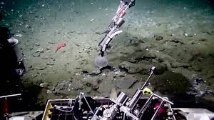
In many places methane escapes through cracks in the seafloor known as cold seeps. Confusingly, the temperature at cold seeps tends to be slightly warmer than the surrounding ocean, and because of this the seeps are host to a whole biome of species.Recently the Ocean Exploration Trust found 500 of these cold seeps off the US West Coast, on the Cascadia margin, where methane fizzes up like champagne. Little-known animals thrive there like mussels with bacteria in their gills that harness energy from the bubbling methane. It’s still a mystery as to where the methane originates, but it’s postulated that it is produced by geological activity beneath the Pacific Ocean. Another unknown is what effect the escaping methane will have on atmospheric methane concentrations, and the environment in general, as methane is a greenhouse gas.